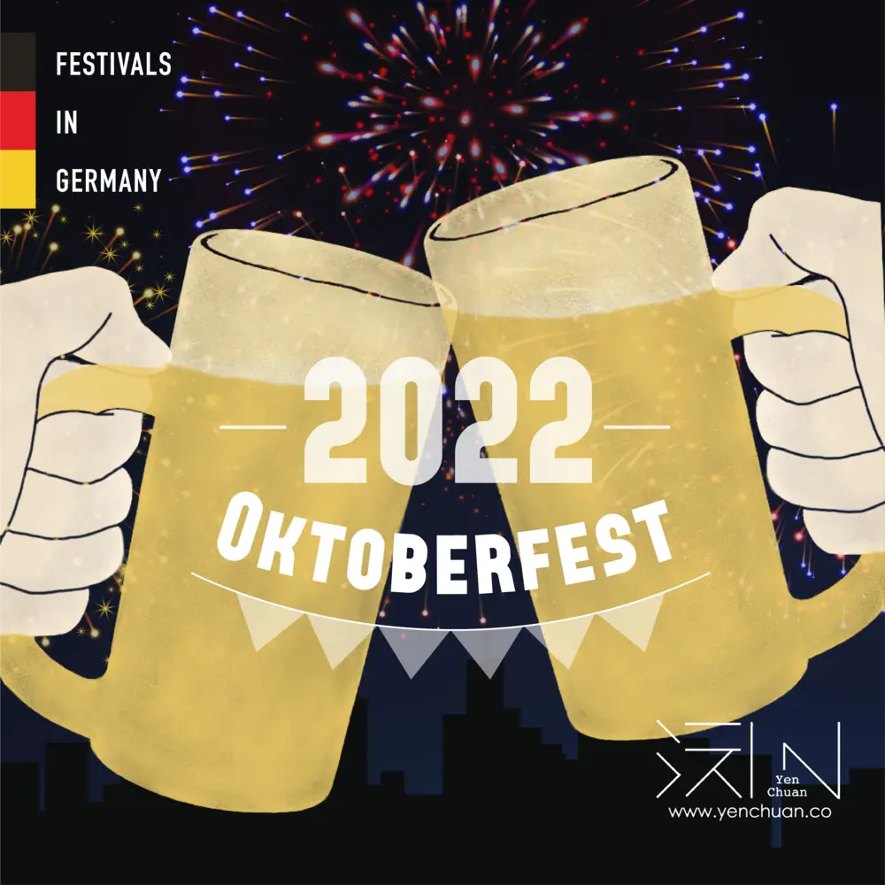

Articles / Tips & trends
Let’s party hard in Oktoberfest!
2022-09-16 · News, Tips and Trivia

Original public content from Yen Chuan. Product claims and specifications remain subject to confirmation by the company.
The Oktoberfest or “Wiesn” as the locals affectionately call their folk festival, is an integral part of Munich tradition. Today, the festival is well-known worldwide, iconic for its beer, tents, and chicken!
With over six million guests a year, this festival is one of the world’s oldest, biggest, and longest parties. It celebrates Bavarian tradition with delicious food, Munich beer, and countless rides and attractions – both on the festival grounds, and in large tents where gallons of beer flow!
What’s Oktoberfest?
The origins of Oktoberfest date back to 19th-century Bavaria, when King Ludwig held a state fair in Munich to celebrate his autumn marriage.
In present day, the festival kicks off as the mayor taps the first keg at noon on the third Saturday of September. Some 6 million revelers spend the ensuing 16 days clinking and drinking 1-liter beer steins, eating sausages and doughy pretzels, and swooshing through the air aboard carnival rides.
Want to participate in Oktoberfest 2022? Here’s what you need to know:
When does the festival begin?
This year’s festival will take place from September 17 until October 3
How much do I need to spend?
Getting into the festival and the beer tents are 100% free!
The price of beer at Oktoberfest 2022 will range from €12.60 to €13.80
Should I get beer table reservations in a tent?
Technically no, but it doesn’t hurt to do so!
There should be no issue finding a place to get a beer during the days or weekdays. Nights and weekends could be more challenging, however.
Wanna have some tipsy delights at home?
Try out some Radler Beer!